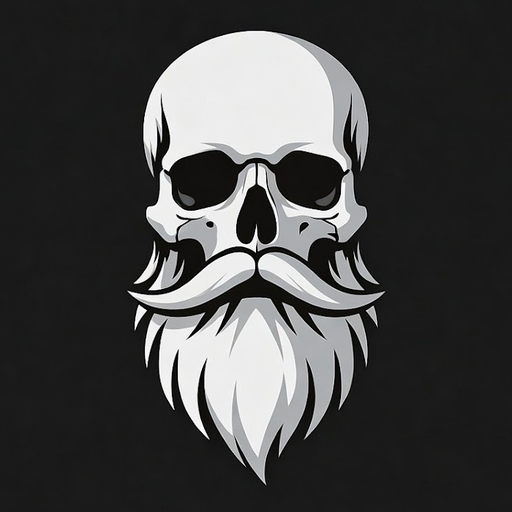
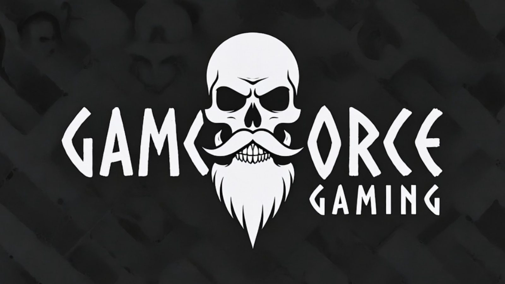

It copies
- Chat windows, tabs and channels
- Which addons are on or off
- Your Edit Mode layout choice
- Nameplate and interface settings
- Action bars, for the same class

GAMEFORCE GAMING
A WoW addon for Forever and Retail
Set up one character. Every new one starts ready.
Log into the character you set up the way you like and type /ft save.
Open any new character. Your template is applied about four seconds after login.
It applies what it can, tells you what it did and what it skipped, and asks for a reload only if your addon list changed.